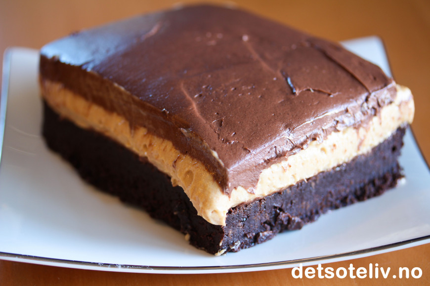

Peanut Butter Fudge Brownies

Soft, mørk, bløt brownie!
Kremete peanøttsmørfyll.
Enda mer kremete sjokoladekrem på toppen.
Ingredienser
Fudge Brownie:
- 150 g smør
- 300 g kokesjokolade
- 3 store egg
- 4 dl sukker
- 3 ts vaniljesukker
- 5 ss kakao
- 2,25 dl hvetemel
Peanut Butter Filling:
- 120 g kremost
- 2,5 dl creamy peanøttsmør
- 1,25 dl melis
- 0,5 ts vaniljeekstrakt
- 2 dl kremfløte
Chocolate Frosting
- 50 g smør
- 120 g kremost
- 1 ts vaniljeekstrakt
- 3 ss kakao
- 4,5 melis
Fremgangsmåte
Fudge Brownie
- Smelt smør i en liten kjele. Tilsett kokesjokolade og la den smelte i smøret. Ta kjelen av platen.
- Pisk egg og sukkeret luftig med en stålvisp (du trenger ikke piske eggedosis). Pisk deretter inn i sjokoladesmøret. Sikt i mel, kakao og vaniljesukker. Rør deigen raskt sammen.
- Ha deigen i en liten, bakepapirkledd langpanne (ca 20x30 cm) med bakepapir i bunnen.
- Stek kaken midt i ovnen ved 175°C i 25 min. Kaken skal fortsatt virke litt rå i midten. Avkjøl kaken i formen i kjøleskapet til den er helt kald.
Peanut Butter Filling
- Pisk sammen kremost, peanøttsmør, melis og vaniljeekstrakt. Pisk kremfløten til stiv krem og vend i.
- Fordel peanøttfyllet oppå den helt kalde browniebunnen, som fortsatt er i formen. Sett kaken i fryseren i ca. 1 time, så peanøttfyllet blir stivere i konsistensen.
Chocolate Frosting
- Pisk sammen mykt smør og kremost (se tips). Pisk deretter inn vaniljeekstrakt, kakao og melis.
- Fordel sjokoladekremen oppå peanøttfyllet i formen.
Avkjøling
- La kaken stå i kjøleskapet over natten (eller noen timer i fryseren). Både kaken og fyllet må bli stivere i konsistensen før du skjærer kaken i biter (se tips)
- Løft kaken ut av formen ved å ta tak i bakepapiret og del kaken opp i firkanter med en stor og skarp kniv.
- Oppbevar kakebitene i kjøleskapet frem til servering.
Tips
- ☆ Til fyllet bruker jeg Creamy Peanut Butter, som er amerikansk peanøttsmør helt uten nøttebiter. Fås blant annet kjøpt i butikkene til Meny.
- ☆ Det er viktig at browniebunnen er helt kald før du har på peanøttfyllet, ellers kommer fyllet til å smelte. Sett gjerne browniebunnen i kjøleskapet i noen timer.
- ☆ Det er også viktig at kaken med peanøttfyllet får stå kaldt en god stund før du har på sjokoladefyllet slik at det blir fastere. Til sjokoladefyllet bruker jeg skikkelig mykt smør, nesten så det er smeltet, slik at sjokoladekremen blir myk nok til at den lett kan smøres utover den avkjølte peanøttkremen. Dernest er det viktig at hele kaken får stå lenge kaldt før kaken løftes ut av formen og skjæres i biter. Peanøttfyllet er nokså bløtt og tyter ut av kaken dersom kaken ikke har stått kaldt lenge nok. Jeg syntes det gikk lettest når jeg lot kaken stå i fryseren lenge nok til at peanøttfyllet ble skikkelig fast før jeg skjærte kaken i biter. Kakebitene kan stå en liten stund i romtemperatur rett før servering, så kaken og fyllet blir mykt og kremete igjen.
Nyt den deilige kaken! 🤤